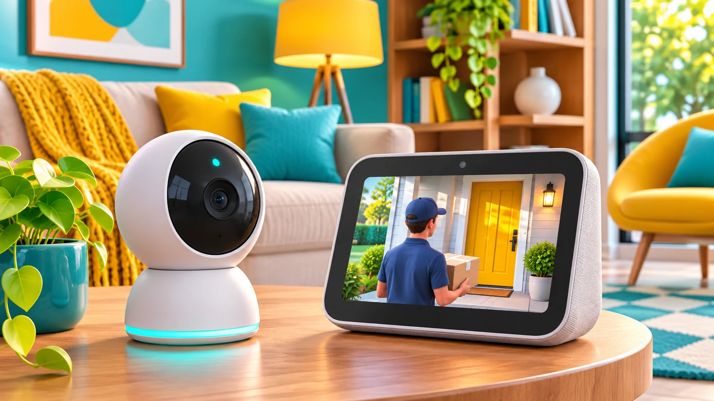

Smart home · Field note 067
Google Home update targets Nest camera issues and smarter displays
The November 11 rollout brings Live View fixes and more visual answers on Nest Hubs.

Google Home’s latest update addresses Nest camera Live View problems while adding improvements for Nest Hubs and Gemini on speakers, according to 9to5Google’s November 11 report.
For Gemini early-access users, the changes include quicker timers and Broadcasts, improved home controls, and more conversational feedback. Smart displays can add relevant images to answers.
The Home app also gains a Premium settings page and an Eco Mode Everywhere option for homes with multiple Nest Thermostats. Public Preview adds Google Wallet home keys for supported Android devices and compatible Aliro locks.
Availability depends on the feature, device, and rollout stage.